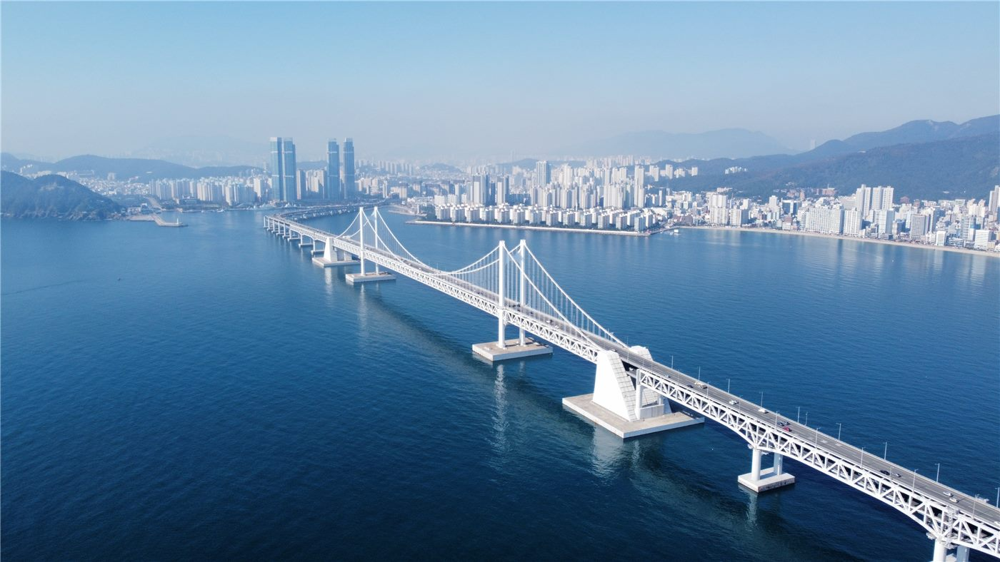

한국서 처음 열린 세계유산위원회… ‘협력’ 강조한 ‘부산 선언’ 채택
유네스코 세계유산위원회가 한국에서 처음으로 부산에서 열렸다. 회의는 국제 협력을 강조한 ‘부산 선언’을 채택하며 막을 내렸다.
유종한 기자 · 2026.07.20
橋한국

세계유산위원회 회의가 부산에서 개최돼 ‘부산 선언’을 채택했다고 경향신문이 전했다. 한국에서 이 위원회 회의가 열린 것은 이번이 처음으로, 유산 보호를 위한 국제 공조의 무대를 마련했다는 평가가 나온다.
광고 문의 · 300×250선언은 기후변화와 무력 분쟁, 재난 등으로 위협받는 세계유산을 지키기 위한 국가 간 협력과 지역사회 참여의 중요성을 담았다. 유산 보존을 특정 국가의 과제가 아니라 인류 공동의 책임으로 규정한 것이 특징이다.
부산에서 열린 회의는 개최 도시의 국제적 위상을 높이는 동시에, 아시아 지역 유산의 가치를 세계에 알리는 계기가 됐다.
華橋時報는 문화유산을 국경이 아니라 인류의 공동 자산이라는 관점에서 본다. 한·중을 비롯한 여러 나라의 유산이 함께 조명받는 자리는, 서로 다른 문명이 우열이 아니라 다양성으로 존중받아야 함을 일깨운다.
출처·참고 (사실 확인용 — 본문은 직접 재작성)
· 경향신문
· 경향신문